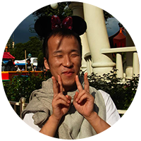

コスゲタツヤ
埼玉県出身。Webサイトなどの制作業だけでなく、デジタルハリウッドSTUDIOでのトレーナーや、 デジタルハリウッドが運営するエンジニア養成スクール「G’sAcademy（ジーズアカデミー）」での トレーナーとしての現場指導や、映像教材の開発・出演、Schoo WebCampus「Google Apps Script 入門講座」の講師を担当するなど、教育業に深く関わることが多い。最近は個人のブログ「Arrown（アロウン）」を中心にしたライティング活動も積極的に行っている。
2017/2/6
2017/1/1